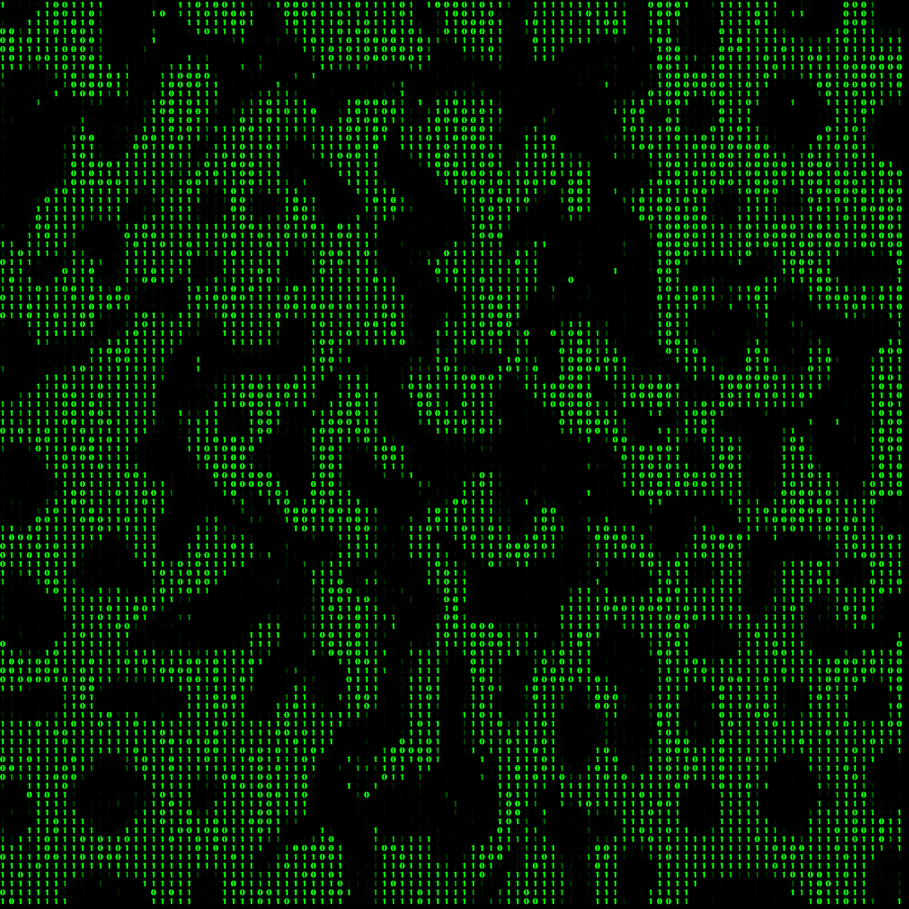
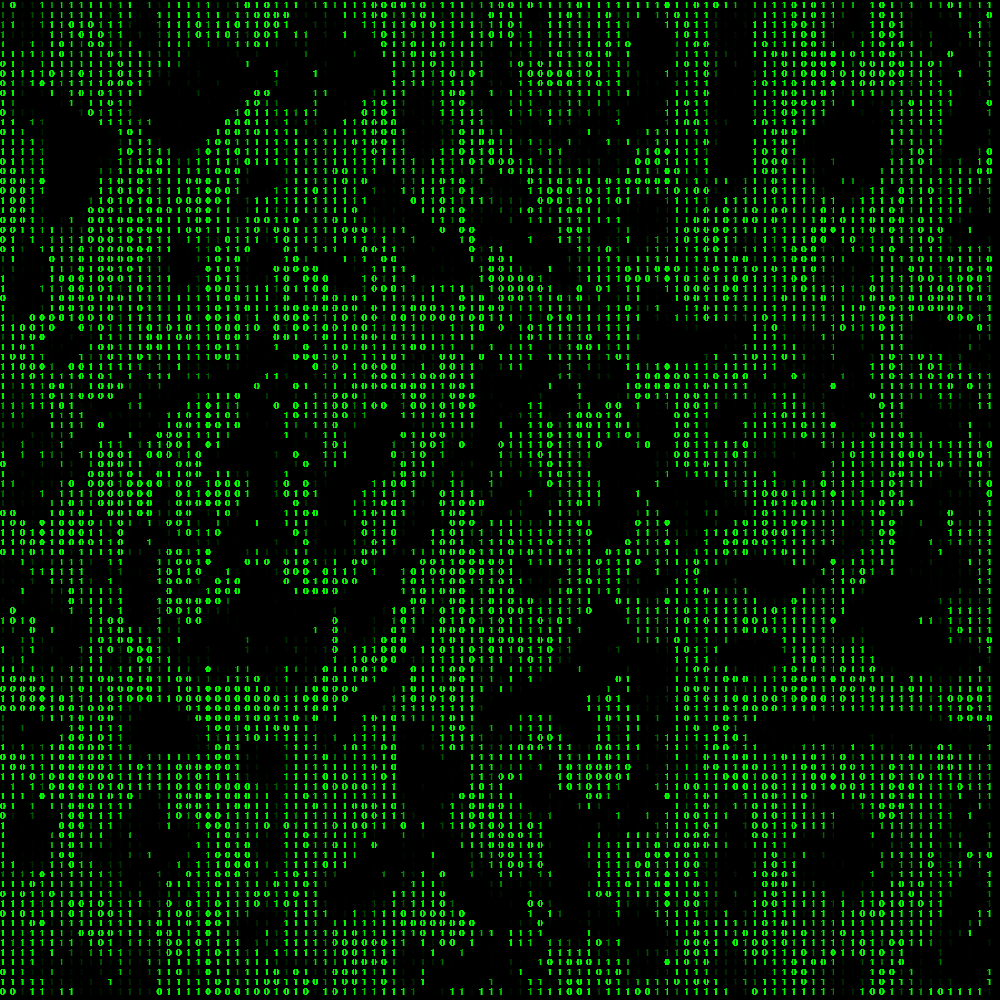

| This project situates itself at the intersection of technology, digital media, and social criticism. By referencing the aesthetics of video games and virtual reality, the sculpture bridges the digital world with reality, allowing Augmented Reality to be experienced without a screen. The project also serves as a critique of human virtual behavior. People often reveal their true thoughts and emotions through virtual platforms such as social media and video games. The sculpture aims to portray the euphoria that is frequently concealed and suppressed in person. |